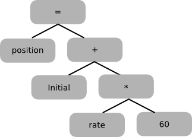
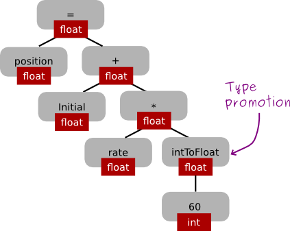

What is a compiler?
A compiler is itself a program, written in some host language. (In cs536, students will implement a compiler for a simple source language using Java as the host language.)
A compiler operates in phases; each phase translates the source program from one representation to another. Different compilers may include different phases, and/or may order them somewhat differently. A typical organization is shown below.
Below, we look at each phase of the compiler.
The scanner is called by the parser; here's how it works:
Here are some Java lexemes and the corresponding tokens:
lexeme: ; = index tmp 37 102 corresponding token: SEMI-COLON ASSIGN IDENT IDENT INT-LIT INT-LIT
Note that multiple lexemes can correspond to the same token (e.g., there are many identifiers).
Given the source code:
position = initial + rate * 60 ;a Java scanner would return the following sequence of tokens:
IDENT ASSIGN IDENT PLUS IDENT TIMES INT-LIT SEMI-COLONErroneous characters for Java source include # and control-a.
source code: position = initial + rate * 60 ;
Abstract syntax tree:
Notes:
The semantic analyzer checks for (more) "static semantic" errors, e.g., type errors. It may also annotate and/or change the abstract syntax tree (e.g., it might annotate each node that represents an expression with its type). Example:
Abstract syntax tree before semantic analysis:
Abstract syntax tree after semantic analysis:
The Intermediate Code Generator
The intermediate code generator translates from abstract-syntax tree to intermediate code. One possibility is 3-address code (code in which each instruction involves at most 3 operands). Below is an example of 3-address code for the abstract-syntax tree shown above. Note that in this example, the second and third instructions each have exactly three operands (the location where the result of the operation is stored, and two operators); the first and fourth instructions have just two operands ("temp1" and "60" for instruction 1, and "position" and "temp3" for instruction 4).
temp1 = inttofloat(60) temp2 = rate * temp1 temp3 = initial + temp2 position = temp3
The optimizer tries to improve code generated by the intermediate code generator. The goal is usually to make code run faster, but the optimizer may also try to make the code smaller. In the example above, an optimizer might first discover that the conversion of the integer 60 to a floating-point number can be done at compile time instead of at run time. Then it might discover that there is no need for "temp1" or "temp3". Here's the optimized code:
temp2 = rate * 60.0 position = initial + temp2
The code generator generates object code from (optimized) intermediate code. For example, the following code might be generated for our running example:
.data
c1:
.float 60.0
.text
l.s $f0,rate
mul.s $f0,c1
l.s $f2,initial
add.s $f0,$f0,$f2
s.s $f0,position